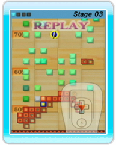

13 |
Replay Data |
 |
● Saving Replay Data By selecting Save Replay on the Game Results Screen, each registered player can store one replay-data record per game mode (circle ○, stick ／, and square □). Up to 10 players can be registered, so up to 30 replay-data records can be stored. You can protect replay data that you don’t want to lose by adding it to your Favorite Replays. ● Viewing Replay Data Replay data can be viewed by selecting Replay on the Game Window Setup Screen, grabbing the Replay Mii you want to view, and dropping it over a game window. Replay data can also be viewed by selecting Replays on the Main Menu. *Long replay data is cut short when saved, so the replay will start from partway through the play session. To stop a replay, point at the game window where it is playing, press
● Replay Menu Options
|
 ,
and select Return from the Pause Menu.
,
and select Return from the Pause Menu. |
 |
 |